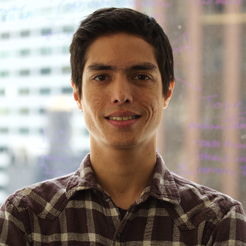

software developer

About
I am a full stack web application developer currently residing in Brooklyn, NY. I love
learning new things and obsess over functionality and usability. I have over two years
of professional software development experience which includes a wide range of responsibilities.
I've worked largely within the financial sphere developing software solutions for money management
firms. I was responsible for multiple drastic overhauls in UI and UX design, along side multiple
custom development projects designed on a per client basis. I learned the fundamentals of web
development in NYC at Fullstack Academy, a highly competitive and top ranked coding bootcamp.
Experience
Blue Corner Solutions (2015-2018)
Software developer
-
Spring framework web application development adhering to strict Separation of Concerns
architecture. Responsible for the research, design and implementation of client requested features
from front end UI to specialized backend database integrations such as APX and Moxy. Draft
comprehensive effort estimates detailing expected development process.
-
Use Windows Remote Desktop Protocol to setup Apache Tomcat servers as a Windows service
and deploy application and SQL databases across a variety of Windows server versions.
-
Manage database backups, SQL Queries and stored procedures and perform database version
migrations across multiple clients custom implementations.
-
Pin point and resolve runtime bottle necks to scale application according to increasing client
database size requirements
-
Liaise with individual application users to gain holistic understanding of real usage from the
client’s perspective and provide 1 on 1 support and training in application use.
Education
Fullstack Academy of Code (2015)
NYC immersive coding bootcamp focusing on real world application of modern web technologies
Arizona State University (2013)
Bachelor of Arts in Film and Media Studies